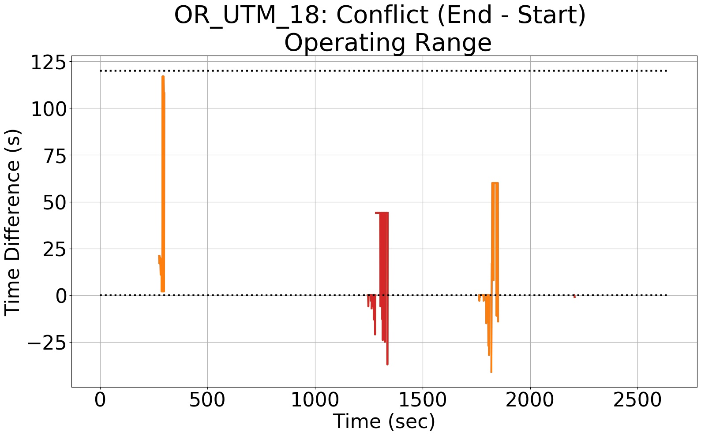
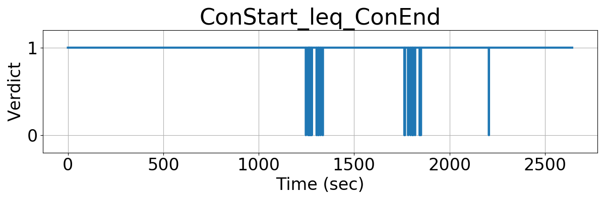
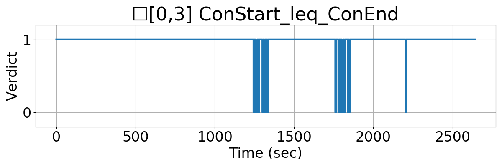

Integrating Runtime Verification into an
Automated UAS Traffic Management System
Matthew Cauwels, Abigail Hammer, Benjamin Hertz, Phillip H. Jones, Kristin Y. Rozier
This webpage contains supplementary specifications for "Integrating Runtime Verification into an
Automated UAS Traffic Management System" by M. Cauwels, A. Hammer, B. Hertz, P. H. Jones, and K. Y. Rozier
OR_UTM_18
Specification Description
A conflict's estimated Start time (conStart) must always be less than the estimated End time (conEnd)
Signals Required
conStart, conEnd
Boolean Conversion of Signals to Atomic Inputs
conStart_leq_conEnd = 1;
for(i = 0; i < NumUAS; i++)
{
// if UAS i's conStart is less than its conEnd
// and both values are not "nan"
if((conStart[i] > conEnd[i]) && (conStart[i] == conStart[i]) && (conEnd[i] == conEnd[i]))
{
conStart_leq_conEnd = 0;
}
}MLTL Specification
Original: conStart_leq_conEnd
Updated: ☐[0,3] conStart_leq_conEnd
Fault Explanation
Conflicts cannot end before they begin
Additional Notes
Note that several bugs were present in the conflict logic during the December 16th flight test.
(1) The labeling of which UAS are involved in the conflict is incorrect. The logged data shows that UAS 0-3 are involved in conflicts; hwoever, these UAS are not transmitting telemetry during these conflicts. It was discovered that an indexing value was being logged by the UTM instead of the UAS flight plan ID.
(2) There are multiple conflicts detected for the same UAS at the same time, but with different end times. This was due to the jumbing of conStart, conEnd, and conDetect labels within the UTM.
(3) There are several instances where end times preceed the start times, i.e., the difference is negative. Again, this was due to the mislabeling of font face=courier>conStart, conEnd, and conDetect when logging data from the UTM.
Figures


